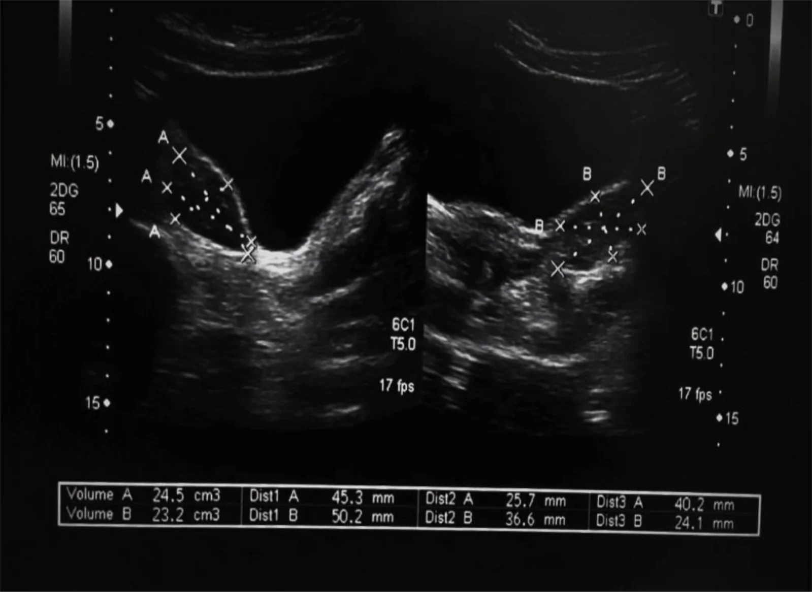
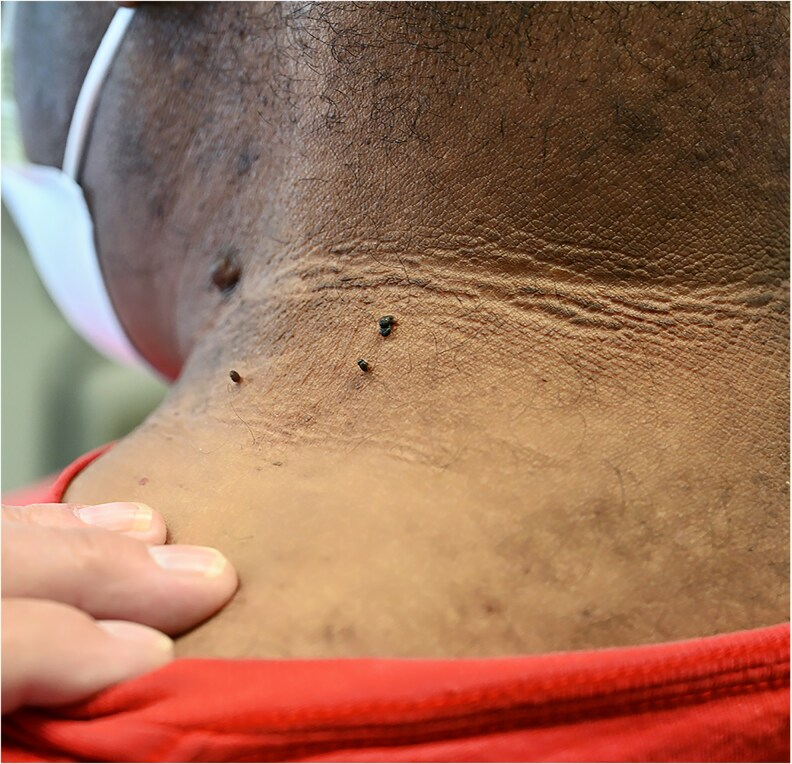

Нейроэндокринные синдромы. Предменструальный синдром. Климактерический синдром. Посткастрационный синдром. Синдром поликистоза яичников
Нейроэндокринные синдромы: общая классификация и механизм формирования
Репродуктивная система работает как цепочка из нескольких уровней: кора головного мозга — гипоталамус — гипофиз — яичники — органы-мишени. Каждый уровень подчиняется предыдущему и отвечает на его сигналы. Когда один из уровней выходит из строя, нарушается вся цепочка — и клиническим выражением этого нарушения становится нейроэндокринный синдром (НОЭС): устойчивый симптомокомплекс, возникающий в результате дисфункции нейроэндокринной регуляции репродуктивной системы. В отечественной гинекологической эндокринологии НОЭС занимают особое место: именно они объясняют большинство нарушений менструального цикла, ановуляцию и эндокринное бесплодие, с которыми гинеколог сталкивается ежедневно.
Кажется, что нейроэндокринный синдром — это болезнь яичников. На деле первичное поражение чаще всего находится выше: в гипоталамусе или гипофизе, а яичники страдают вторично, отвечая морфологической перестройкой на искажённые сигналы сверху. Именно поэтому лечить только яичники при большинстве НОЭС бессмысленно: устранять нужно причину на уровне первичного поражения.
Классификация, предложенная В. Н. Серовым и В. П. Сметник и принятая в отечественной гинекологии, делит все НОЭС на два ствола. Первый ствол — синдромы, связанные с беременностью: послеродовой нейроэндокринный синдром, послеродовой гипопитуитаризм и гиперпролактинемия органической природы. Они объединены тем, что пусковым событием служит патологически протекавшие беременность или роды. Второй ствол — синдромы, не связанные с беременностью: функциональная гиперпролактинемия, синдром поликистозных яичников (СПЯ), предменструальный синдром, климактерический синдром, постпубертатный адреногенитальный синдром, функциональная альгоменорея и посткастрационный синдром. Эти состояния возникают вне связи с гестацией и имеют самостоятельные пусковые механизмы. Принадлежность к одному из двух стволов определяет логику диагностического поиска: при синдромах второго ствола акцент смещается на исключение хронических заболеваний, генетической предрасположенности и ятрогенных воздействий.[Айламазян, с. 69]
Причины, нарушающие работу гипоталамо-гипофизарной оси — системы взаимно регулирующих сигналов между гипоталамусом и гипофизом, — делят на врождённые и приобретённые. К врождённым относят генетически обусловленные аномалии рецепторного аппарата, дефекты синтеза гонадолиберина и дисгенезию гонад. Приобретённые причины разнообразнее: черепно-мозговые травмы и нейроинфекции, хронический стресс, резкое снижение массы тела, опухоли гипофизарно-гипоталамической области, послеродовые некрозы (синдром Симмондса–Шихана), а также ятрогенные воздействия — хирургическое удаление яичников или длительный приём препаратов, влияющих на дофаминергическую передачу.
Общий патогенетический механизм при всех НОЭС сводится к следующему. В норме гипоталамус выделяет гонадолиберин пульсирующими порциями; гипофиз отвечает выбросом ФСГ и ЛГ; яичники под их действием обеспечивают созревание фолликула, овуляцию и синтез эстрадиола с прогестероном. Эстрадиол по механизму обратной связи сдерживает секрецию гонадолиберина и гонадотропинов — система находится в равновесии. При НОЭС это равновесие нарушается на одном из уровней. Если гипоталамус генерирует сигналы с изменённой частотой или амплитудой, гипофиз отвечает аномальным соотношением ФСГ и ЛГ; яичники получают искажённую команду и либо не овулируют, либо синтезируют избыток андрогенов. Итогом становится хроническая ановуляция — центральное звено патогенеза большинства НОЭС. Ановуляция как причина бесплодия диагностируется в 15–20 % случаев эндокринного бесплодия, а среди пациенток с эндокринным бесплодием частота СПЯ достигает 50–60 %. СПЯ встречается у 5–10 % женщин репродуктивного возраста и у 20–25 % женщин с бесплодием, а пациенты с СПЯ составляют 2–4 % всех гинекологических больных. Поликистозные яичники выявляют у 80–90 % женщин с разными формами гиперандрогении.[Радзинский, с. 157]
Посмотрите на логику этой цепочки: верификация любого НОЭС означает прежде всего определение первичного уровня поражения регуляции. Именно поэтому диагностика начинается не с яичников, а с анализа гормонального профиля всей оси целиком. После снижения массы тела на 12–15 % у женщин с гипоталамическим синдромом восстанавливается регулярный менструальный цикл, причём у 2/3 из них — овуляторный: это наглядно показывает, что при поражении гипоталамического уровня достаточно устранить метаболическую нагрузку, чтобы ось заработала самостоятельно. Таким образом, общее для всех НОЭС — нарушение на одном из уровней гипоталамо-гипофизарной оси, которое нисходящим путём подавляет функцию яичников и закономерно приводит к ановуляции.[Радзинский, с. 149]
Предменструальный синдром: понятие, формы и патогенез
Предменструальный синдром (ПМС) — циклически повторяющийся симптомокомплекс психоэмоциональных, вегетативно-сосудистых и обменно-эндокринных нарушений, возникающих в последние дни цикла и, как правило, исчезающих с началом менструации. Ключевое слово здесь — циклически: симптомы привязаны к строго определённой фазе цикла и воспроизводятся из месяца в месяц, что и отличает ПМС от любого хронического расстройства, которое просто совпало по времени.[лекция, с. 21]
Эта привязка объясняется физиологией. После овуляции на месте лопнувшего фолликула формируется жёлтое тело, и начинается лютеиновая фаза — период менструального цикла, длящийся примерно с 14-го по 28-й день и характеризующийся доминированием прогестерона. Именно в этом окне и разворачивается ПМС. Не будь циклического подъёма прогестерона, пришлось бы искать совершенно другой пусковой механизм — и, по всей видимости, он не объяснял бы ни цикличности, ни связи симптомов с менструацией.
Клинически ПМС неоднороден. Выделяют пять форм, и каждая из них отражает собственный патогенетический акцент. Посмотрите, как они соотносятся между собой в сводной таблице — а затем разберём каждую подробнее.
| Форма | Ведущие симптомы | Патогенетический механизм |
|---|---|---|
| Эмоционально-аффективная | Раздражительность, плаксивость, депрессия, агрессивность | Дефицит серотонина на фоне повышения прогестерона |
| Отёчная | Нагрубание молочных желёз, отёки лица и конечностей, метеоризм | Гиперпролактинемия и гиперальдостеронизм — задержка натрия и воды |
| Цефалгическая | Мигренеподобные головные боли, тошнота, рвота, фото- и фонофобия | Простагландин-опосредованное расширение сосудов мозга |
| Кризовая | Симпатоадреналовые кризы: подъём АД, тахикардия, страх смерти | Активация симпатоадреналовой системы через гипоталамо-гипофизарную ось |
| Атипичная | Повышение температуры тела, гиперсомния, офтальмоплегия, аллергические реакции | Гетерогенен; предположительно — иммуноэндокринные нарушения |
Как видно из таблицы, самая частая форма — эмоционально-аффективная — строится на дефиците серотонина. В лютеиновую фазу прогестерон ускоряет распад триптофана по кинурениновому пути, отвлекая субстрат от синтеза серотонина. Результат — раздражительность, плаксивость, иногда агрессия, которые пациентки нередко воспринимают как «характер», а не как симптом. Отёчная форма подчиняется другой логике: повышенный пролактин усиливает реабсорбцию натрия в почечных канальцах, а вторичный гиперальдостеронизм — следствие прогестерон-индуцированной активации ренин-ангиотензиновой системы — удерживает воду. Отсюда нагрубание молочных желёз, пастозность лица и метеоризм. Цефалгическая форма по клинике неотличима от мигрени: боль пульсирующая, односторонняя, сопровождается тошнотой и светобоязнью. Механизм — простагландины, концентрация которых в лютеиновую фазу возрастает и вызывает вазодилатацию мозговых сосудов. Кризовая форма — наиболее тяжёлая по субъективным ощущениям: внезапный подъём артериального давления, сердцебиение и панический страх смерти складываются в картину симпатоадреналового криза; гипоталамо-гипофизарная ось при этом работает в режиме патологической активации. Атипичная форма — сборная группа: гиперсомния, субфебрилитет, офтальмоплегия и аллергические реакции объединены лишь цикличностью, а конкретный механизм у каждой пациентки свой.
Теперь о патогенезе подробнее. Четыре молекулы объясняют большую часть симптоматики. Прогестерон — отправная точка: его метаболит аллопрегнанолон взаимодействует с ГАМК-А-рецепторами и в норме оказывает анксиолитическое действие, однако при индивидуальной сенситизации к колебаниям его концентрации эффект парадоксально инвертируется — возникает тревога, а не успокоение. Серотонин, как уже сказано, угнетается: его дефицит в ЦНС меняет болевой порог, аппетит и настроение одновременно. Пролактин при ПМС нередко умеренно повышен — он не только задерживает жидкость, но и сенситизирует ткань молочных желёз к болевым стимулам, что объясняет масталгию. Альдостерон замыкает картину отёков: его вторичное повышение в лютеиновую фазу — прямое следствие конкурентного вытеснения прогестероном альдостерона из связи с минералокортикоидными рецепторами и компенсаторного подъёма его синтеза.
Диагностика ПМС держится на двух критериях. Первый — цикличность: симптомы должны появляться в лютеиновую фазу как минимум трёх последовательных циклов и прекращаться в первые дни менструации. Второй — функциональный ущерб: жалобы нарушают трудоспособность или межличностные отношения; изолированная предменструальная дискомфортность ПМС не составляет. Пациентке предлагают вести дневник симптомов в течение двух циклов подряд — это единственный надёжный способ установить связь с фазой цикла, а не с другим триггером.
Дифференцировать ПМС важнее всего с предменструальным дисфорическим расстройством (ПМДР) — состоянием, которое по DSM-5 выделено в самостоятельную нозологию. При ПМДР на первый план выходят аффективные симптомы — выраженная депрессия, дисфория, ощущение утраты контроля — и они настолько интенсивны, что делают нормальную социальную жизнь невозможной. Главное различие между ПМС и ПМДР — не перечень симптомов, а их тяжесть и степень социальной дезадаптации: соматические жалобы при ПМДР присутствуют, но уходят на второй план перед психиатрической картиной. Это разграничение принципиально, поскольку ПМДР требует назначения антидепрессантов из группы СИОЗС, тогда как при ПМС их применение ограничено.
Диагностика и лечение предменструального синдрома
Поставить диагноз ПМС труднее, чем кажется. Симптомы — раздражительность, отёки, головная боль — встречаются при самых разных состояниях, и главный вопрос не «есть ли они», а «когда именно они появляются». Единственный надёжный способ ответить на него — дневник симптомов, то есть попросту ежедневный письменный учёт жалоб с отметкой дня цикла. Пациентку просят вести его на протяжении двух–трёх циклов подряд: только тогда становится видно, укладываются ли симптомы строго в лютеиновую фазу и исчезают ли с началом менструации. Если та же раздражительность присутствует и в первую половину цикла — диагноз ПМС под вопросом.
Гормональное обследование не подтверждает диагноз как таковой, но позволяет исключить другую патологию и уточнить форму синдрома. Определяют уровни прогестерона, эстрадиола, пролактина, ФСГ и ЛГ на 20–22-й день цикла — то есть в середине лютеиновой фазы, когда концентрации наиболее информативны. При масталгии дополнительно оценивают пролактин; при выраженных отёках — альдостерон и ренин; при психоэмоциональных расстройствах — тиреоидный профиль, чтобы не пропустить гипотиреоз, клинически схожий с тяжёлой психической формой ПМС.
Лечение начинают с немедикаментозных мер, и это не формальность. Нормализация режима сна и бодрствования, ограничение соли и простых углеводов во второй половине цикла, отказ от кофеина и алкоголя — всё это снижает выраженность отёчного и вегетативного компонентов. Аэробная физическая нагрузка не менее 30 минут три–четыре раза в неделю уменьшает тревожность и болевой порог за счёт нарастания уровня эндорфинов. При выраженных психоэмоциональных нарушениях — когнитивно-поведенческая психотерапия: она работает с установками, которые усиливают субъективную тяжесть симптомов.
Медикаментозная тактика зависит от ведущей клинической формы. Посмотрите на таблицу ниже: каждой форме ПМС соответствует своя группа препаратов, и назначать их «всем подряд» неверно.
| Форма ПМС | Ведущие симптомы | Препараты первой линии | Примечание |
|---|---|---|---|
| Нейропсихическая | Раздражительность, тревога, депрессия, плаксивость | СИОЗС (сертралин, флуоксетин); анксиолитики | Курсовой или циклический приём во 2-ю фазу |
| Отёчная | Отёки конечностей и лица, нагрубание молочных желёз, прибавка массы тела | Диуретики (спиронолактон) | Спиронолактон — антиальдостероновый, снижает задержку натрия |
| Цефалгическая / вегетативная | Головная боль, мигренеподобные приступы, сердцебиение | Гестагены (дидрогестерон, прогестерон); КОК с антиминералкортикоидным гестагеном | Схема КОК «24+4» (например, дроспиренон + этинилэстрадиол) |
| С масталгией | Выраженная болезненность молочных желёз, гиперпролактинемия | Агонисты дофамина (бромокриптин, каберголин) | Снижают избыточную секрецию пролактина |
Как видно из таблицы, центральное место занимают два полюса: психоэмоциональная форма и отёчная. Разберём каждый.[Предменструальный]
При нейропсихической форме препаратами выбора служат СИОЗС — селективные ингибиторы обратного захвата серотонина, то есть попросту средства, которые удерживают серотонин в синаптической щели дольше и тем самым выравнивают настроение. Сертралин и флуоксетин можно назначать либо непрерывно, либо только во вторую половину цикла — оба режима эффективны при ПМС. Выбор режима обсуждают с пациенткой: циклический приём проще переносится и даёт меньше системных эффектов.
При отёчной форме используют диуретики, прежде всего спиронолактон: он блокирует рецепторы альдостерона и устраняет патологическую задержку натрия и воды, которая нарастает в лютеиновую фазу. При масталгии, особенно сочетающейся с умеренным подъёмом пролактина, назначают агонисты дофамина — бромокриптин или каберголин. Они подавляют секрецию пролактина через дофаминовые рецепторы гипофиза и уменьшают набухание железистой ткани.
Гестагены и комбинированные оральные контрацептивы (КОК) применяют при смешанных и цефалгических формах. Следует выбирать микродозированные монофазные препараты; гестагенный компонент желательно с антиминералкортикоидным эффектом — например, дроспиренон. Классический режим КОК можно изменить на схему «24+4»: 24 дня приёма и только 4 дня перерыва — это сокращает безгормональный интервал и ослабляет симптомы, связанные с падением гормонального фона. Гормональные неконтрацептивные препараты (дидрогестерон, микронизированный прогестерон) назначают курсами по 3–6 месяцев.
Главный принцип ведения пациентки с ПМС: форма синдрома определяет препарат, а дневник симптомов за два–три цикла — единственное основание для самого диагноза. Без этой документации лечение превращается в перебор средств наугад.
Климактерический синдром: понятие, патогенез и классификация расстройств
Климактерический синдром (КС) — это комплекс вегетативно-сосудистых, психических и обменно-эндокринных нарушений, возникающих у женщин на фоне угасания или резкой потери гормональной функции яичников и общего старения организма. Менопауза как таковая — всего лишь последняя самостоятельная менструация, и диагноз ставится ретроспективно: после 12 последовательных месяцев аменореи. КС — это уже реакция организма на случившееся угасание, а не сам факт его наступления.[лекция, с. 21]
Климактерический период характеризуется постепенным снижением, а затем и полным «выключением» функции яичников: в первые 1–3 года постменопаузы в яичниках обнаруживают лишь единичные фолликулы, а затем они полностью исчезают. Итогом становится состояние гипергонадотропного гипогонадизма — дефицит эстрогенов при компенсаторно высоком уровне гонадотропинов.[Савельева, с. 462]
Большинство симптомов КС непосредственно связаны с дефицитом эстрогенов как основных гормонов, вырабатываемых в фолликулах яичников. Механизм, однако, сложнее прямого «убрали гормон — получили симптом». Эстрогены влияют на нейромедиаторный баланс в головном мозге, и при их падении нарушается работа лимбико-ретикулярного комплекса — системы структур, которая связывает кору больших полушарий с вегетативными центрами ствола и управляет эмоциями, сном и терморегуляцией. Разлаженный комплекс перестаёт удерживать стабильный тонус вегетатики: сосуды реагируют на малейшие стимулы неадекватно, пороги тревоги и болевой чувствительности снижаются. Параллельно падает активность антиоксидантных систем, что усиливает повреждение сосудистого эндотелия, а дефицит серотонина, дофамина и норадреналина объясняет психовегетативные расстройства — раздражительность, депрессию, нарушения сна.
Понять, почему симптомы развиваются не одновременно, а волнами, помогает сравнение с термостатом в старом доме: пока регулятор исправен, он гасит колебания температуры. Когда механизм изнашивается, система ещё держит среднее, но каждый сквозняк даёт резкий скачок — и только потом, через несколько лет, наступает равномерный холод. Именно так дезинтеграция лимбико-ретикулярного комплекса вначале даёт острые приступообразные симптомы, а позже — стойкий дефицит во всех эстрогензависимых тканях.
По характеру и времени появления выделяют три группы климактерических расстройств: ранние, отсроченные (через 1–2 года после менопаузы) и поздние (спустя более 2–5 лет). Посмотрите, как это выглядит в систематизированном виде — Таблица 1 позволяет увидеть всю временну́ю развёртку сразу.[Савельева, с. 462]
| Группа расстройств | Основные симптомы | Сроки появления после менопаузы |
|---|---|---|
| Ранние: вазомоторные | Приливы жара, ознобы, повышенная потливость, головные боли, лабильность артериального давления, учащённое сердцебиение | Первые месяцы, нередко ещё в перименопаузе |
| Ранние: эмоционально-вегетативные | Раздражительность, сонливость, слабость, беспокойство, депрессия, забывчивость, бессонница | Первые месяцы — 1 год |
| Отсроченные: урогенитальные и кожные | Сухость влагалища, диспареуния, учащённое и непроизвольное мочеиспускание; истончение и сухость кожи, ломкость ногтей, выпадение волос | 1–2 года после менопаузы |
| Поздние: обменные и органные | Климактерический остеопороз, сердечно-сосудистые заболевания, болезнь Альцгеймера | Более 2–5 лет после менопаузы |
Как видно из таблицы, главное различие между группами — не просто время, а глубина вовлечения тканей. Ранние симптомы отражают функциональный сбой нейровегетативной регуляции: они острые, приступообразные и потенциально обратимые. Поздние — структурное повреждение органов, которые десятилетиями зависели от эстрогенов.
Остановимся на каждой группе подробнее. Приливы — внезапные волны жара, распространяющиеся от груди к лицу и сопровождающиеся покраснением кожи и потоотделением — возникают из-за нарушения терморегуляторного порога в гипоталамусе: дефицит эстрогенов снижает его настолько, что даже небольшое повышение температуры ядра тела воспринимается как перегрев и запускает сосудорасширяющую реакцию. Психовегетативные расстройства — раздражительность, депрессия, бессонница — непосредственно связаны с падением уровня серотонина и норадреналина на фоне эстрогенного дефицита.
Отсроченная группа — это прежде всего урогенитальная атрофия: истончение и утрата эластичности слизистой влагалища и нижних отделов мочевыводящих путей вследствие прекращения эстрогенной стимуляции. Следствие — сухость, диспареуния, рецидивирующие вагиниты и нарушения мочеиспускания. Начало терапии при этих нарушениях желательно не позднее 18–36 месяцев от наступления менопаузы, пока атрофия не стала необратимой.[Савельева, с. 407]
Среди поздних расстройств особого внимания заслуживает климактерический остеопороз — прогрессирующее снижение минеральной плотности костной ткани, обусловленное усилением костной резорбции при дефиците эстрогенов. У женщин старше 50 лет минеральная плотность поясничного отдела позвоночника снижается на 1% в год — вдвое быстрее, чем у мужчин того же возраста. Итог — переломы позвонков и шейки бедра как самые тяжёлые клинические последствия. К той же поздней группе относятся атеросклероз и ишемическая болезнь сердца, риск которых резко возрастает после менопаузы, а также когнитивные нарушения вплоть до болезни Альцгеймера — эстрогены обеспечивают нейропротективный эффект, и их длительное отсутствие accelerates нейродегенерацию.[Радзинский, с. 477]
Главный практический вывод раздела: КС разворачивается во времени тремя последовательными волнами, и терапевтическое окно наиболее широко именно в первые годы после менопаузы — когда ранние симптомы уже есть, а поздние необратимые повреждения ещё не сформировались.[Савельева, с. 462]
Оценка тяжести климактерического синдрома
Климактерический синдром объединяет десятки симптомов, и врачу нужен единый инструмент, чтобы перевести жалобы пациентки в число. Таким инструментом служит менопаузальный индекс — суммарный балл, отражающий выраженность всего спектра климактерических расстройств. В модификации Уваровой он получил название индекса Куппермана (ММИ, модифицированный менопаузальный индекс): врач оценивает каждый симптом от 1 до 3 баллов и складывает их в общую сумму.
Симптомы разделены на три группы. Первая — нейровегетативные расстройства: артериальное давление (как повышение выше 160/100 мм рт. ст., так и снижение до 90/60 мм рт. ст.), головная боль, вестибулопатии, учащённое сердцебиение в покое, непереносимость высокой температуры, судороги и онемение конечностей, гусиная кожа, дермографизм, сухость кожи, потливость, отёчность лица, аллергические реакции, экзофтальм и блеск глаз, повышенная возбудимость, сонливость, нарушение сна и, главное, приливы жара — менее 10 в сутки (1 балл), 10–20 в сутки (2 балла), более 20 в сутки (3 балла). Вторая группа — обменно-эндокринные нарушения: изменение массы тела, состояние кожи и волос, боли в суставах и мышцах, признаки урогенитальной атрофии. Третья — психоэмоциональные расстройства: рассеянность, снижение памяти, раздражительность, плаксивость, изменения аппетита, навязчивые состояния и мысли, депрессия вплоть до суицидальных мыслей, нарушение полового влечения.[Радзинский, с. 473]
Посмотрите на Таблицу 1 — она сводит все три группы симптомов и пороги баллов в одном месте. Но прочитать её мало: важно понять, что нейровегетативная шкала и шкала обменно-эндокринных и психоэмоциональных расстройств считаются отдельно, а затем суммируются.
| Группа симптомов | 1 балл | 2 балла | 3 балла | Пороги тяжести по блоку |
|---|---|---|---|---|
| Нейровегетативные (приливы, АД, сердцебиение, сон, потливость и др.) | Лёгкая выраженность каждого симптома | Средняя выраженность | Сильная выраженность | Нет КС <10; лёгкий 10–20; средний 21–30; тяжёлый >30 |
| Обменно-эндокринные и психоэмоциональные (масса тела, настроение, память, влечение и др.) | Лёгкая выраженность | Средняя выраженность | Сильная выраженность | Лёгкий 1–7; средний 8–14; тяжёлый ≥15 |
| Суммарный ММИ (все три группы вместе) | — | Лёгкий 12–34; умеренный 35–58; тяжёлый >58 | ||
Как видно из таблицы, нейровегетативный блок имеет собственные пороги: сумма менее 10 баллов означает отсутствие климактерического синдрома, 10–20 — лёгкую форму, 21–30 — среднюю, свыше 30 — тяжёлую. Обменно-эндокринный и психоэмоциональный блоки оцениваются вместе по отдельной шкале: 1–7 баллов — лёгкая форма, 8–14 — средняя, 15 и более — тяжёлая. Итоговая сумма всех трёх групп даёт суммарный ММИ: 12–34 балла соответствуют слабой степени выраженности, 35–58 — умеренной, более 58 — тяжёлой. Ключевая логика здесь простая: нейровегетативная группа весит больше, потому что именно приливы и нарушения сна определяют, насколько синдром дезадаптирует женщину.
Разбор того, как индекс работает на практике, выглядит следующим образом. Шаг первый — врач видит. Пациентка 52 лет описывает более 20 приливов в сутки, постоянную бессонницу, стойкую раздражительность и снижение памяти; потливость выражена сильно, АД поднимается до 160/100 мм рт. ст. Каждый из этих симптомов получает 3 балла, несколько — по 2. Нейровегетативный блок переваливает за 30, обменно-эндокринный и психоэмоциональный — за 15, суммарный ММИ превышает 58. Шаг второй — врач делает вывод. Это тяжёлый климактерический синдром по всем трём шкалам; классификация Вихляевой, основанная только на числе приливов, подтверждает тяжесть: более 20 приливов в сутки с резко выраженными проявлениями и почти полной утратой трудоспособности. Шаг третий — врач действует. Перед решением о заместительной гормональной терапии обязательно лабораторное подтверждение: ФСГ выше 25–30 МЕ/л и эстрадиол ниже 100 пмоль/л указывают на гипергонадотропный гипогонадизм и подтверждают климактерическую природу симптомов. Затем следует обследование перед назначением гормональной терапии: маммография, УЗИ органов малого таза с оценкой толщины эндометрия, коагулограмма, липидный профиль, исключение тромбозов и гормонозависимых опухолей в анамнезе.
Суммарный ММИ выше 58 — основание для безотлагательного начала лечения, тогда как умеренный синдром (35–58 баллов) допускает выбор между гормональными и негормональными методами с учётом противопоказаний. Различные по степени тяжести проявления климактерического синдрома встречаются у 40–60% женщин старше 40 лет, и именно количественная шкала позволяет отслеживать динамику на фоне терапии — повторный подсчёт ММИ через 3 месяца показывает, работает ли выбранная схема.[Радзинский, с. 472]
Менопаузальная гормональная терапия: показания и противопоказания
Термин менопаузальная гормональная терапия, сокращённо МГТ, вытеснил прежнее название «заместительная гормональная терапия» (ЗГТ) — оба обозначения встречаются в современной литературе и означают одно: восполнение дефицита эстрогенов с помощью экзогенных гормональных препаратов у женщин в климактерическом периоде. Цель — не просто устранить приливы, а достичь оптимального уровня гормонов при минимальной дозе, которая реально улучшила бы общее состояние и предотвратила поздние обменные нарушения без побочных эффектов.[Савельева, с. 468]
Посмотрите на таблицу ниже — она сводит показания, абсолютные и относительные противопоказания в одну систему координат, где каждой категории дано краткое клиническое обоснование. Пробегитесь по ней глазами, а затем всё то же самое разобрано прозой.
| Категория | Позиция | Клиническое обоснование |
|---|---|---|
| Показания | Вазомоторные симптомы (приливы, ночная потливость, нарушения сна) | Эстрогены воздействуют на терморегуляторный центр гипоталамуса; положительный эффект достигается в течение первых недель лечения |
| Урогенитальная атрофия (сухость, диспареуния, нарушения мочеиспускания) | Восстанавливает многослойный плоский эпителий; начало терапии желательно не позднее 18–36 месяцев от наступления менопаузы | |
| Профилактика остеопороза у женщин группы риска | Эстрогены тормозят костную резорбцию; показание действует независимо от наличия климактерических симптомов | |
| Ранняя менопауза (40–45 лет) и преждевременная (моложе 40 лет) | Длительный эстрогенный дефицит кратно увеличивает сердечно-сосудистый и остеопоретический риск | |
| Хирургическая (искусственная) менопауза | Резкое выключение яичников без постепенной адаптации; ЗГТ начинают обычно при выписке, но не позднее 3–4-й недели после операции | |
| Абсолютные противопоказания | Рак молочной железы (верифицированный или подозреваемый) | Эстрогены являются промоторами роста гормонозависимых опухолей |
| Тромбоэмболия в анамнезе или активный тромботический процесс | МГТ усиливает прокоагулянтный потенциал; риск рецидива неприемлемо высок | |
| Тяжёлые заболевания печени (острые и декомпенсированные хронические) | Нарушен метаболизм эстрогенов; накопление активных фракций непредсказуемо | |
| Маточное кровотечение неясного генеза | Необходимо исключить рак эндометрия до начала любой гормональной терапии | |
| Относительные противопоказания | Нелеченная артериальная гипертензия | Допустимо после стабилизации АД; неконтролируемая гипертензия повышает риск инсульта на фоне МГТ |
| Антифосфолипидный синдром | Исходно повышенный тромботический риск; решение принимают совместно с гематологом | |
| Гормонозависимый предрак (эндометрия, яичника) | Эстрогены могут стимулировать пролиферацию; возможно при тщательном онкологическом контроле |
Как видно из таблицы, показания к МГТ охватывают четыре самостоятельных клинических ситуации, и ключевой практический смысл здесь — в соотношении величин. Вазомоторные симптомы беспокоят женщину каждый день, а эффект от эстрогенов наступает уже в первые недели лечения. Остеопоретические переломы происходят спустя годы, но их последствия несравнимо тяжелее: если приливы снижают качество жизни, то перелом шейки бедра у пожилой женщины в 20–30% случаев заканчивается летально в течение первого года. Иными словами, «горизонт» у двух показаний отличается в десятки раз — несколько недель против нескольких десятилетий, — и именно поэтому профилактику остеопороза выделяют как самостоятельное, а не сопутствующее показание даже при отсутствии климактерических жалоб.
Хирургическая менопауза стоит особняком. При естественном климаксе угасание яичников растягивается на годы, и организм успевает частично адаптироваться; при двусторонней овариэктомии эстрогены исчезают за считаные дни. Минимальный рекомендуемый срок МГТ после операции — 5 лет, а желательная длительность — до возраста естественной менопаузы. Для сравнения: при климактерическом синдроме без хирургического вмешательства продолжительность ЗГТ при ранних симптомах не должна превышать 2–3 лет. Разница — в два–три раза, и она отражает глубину и резкость эстрогенного дефицита.
Граница между абсолютными и относительными противопоказаниями — принципиальная. Абсолютные означают полный запрет независимо от тяжести симптомов: рак молочной железы, тромбоэмболия, тяжёлое поражение печени и кровотечение неустановленного происхождения. Относительные — это не запрет, а условие: нелеченная гипертензия требует стабилизации давления, антифосфолипидный синдром — консультации гематолога, гормонозависимый предрак — онкологического контроля. При решении вопроса о МГТ у таких пациенток индивидуально оценивают соотношение пользы и риска.[Медицина]
Перед назначением МГТ обязателен стандартный диагностический минимум. Онкологический скрининг включает Пап-тест для исключения цервикальной патологии и маммографию — при приёме МГТ её выполняют ежегодно начиная с 40 лет. Состояние эндометрия оценивают с помощью УЗИ: ключевой параметр здесь — так называемое М-эхо, то есть толщина эндометрия, измеренная в режиме серой шкалы по передне-задней оси в сагиттальном срезе. В постменопаузе допустимое значение М-эхо составляет не более 5 мм; превышение этой границы требует гистологической верификации до начала терапии. Гормональный статус подтверждают лабораторно: ФСГ выше 25–30 МЕ/л и эстрадиол ниже 100 пмоль/л указывают на гипергонадотропный гипогонадизм. При наличии факторов риска остеопороза проводят денситометрию поясничного отдела позвоночника и проксимального отдела бедренной кости. Гемостазиограмма обязательна при длительном приёме препаратов МГТ — контролируют время свёртывания крови, уровень фибриногена, протромбиновый индекс и активированное частичное тромбопластиновое время.
Главный вывод раздела: назначение МГТ — это не автоматический ответ на жалобы, а взвешенное решение после скрининга противопоказаний и инструментально-лабораторного подтверждения показаний. Обследование перед терапией и ежегодный контроль во время неё — условия равнозначные, и одно без другого не работает.[Савельева, с. 464]
Принципы назначения и режимы МГТ
Кажется, что менопаузальная гормональная терапия — это просто «добавить гормоны, которых не хватает», и чем больше доза, тем надёжнее результат. На деле всё наоборот: стратегия МГТ строится на принципе минимально эффективной дозы, и её превышение не усиливает пользу, а прибавляет риски. Цель — достичь таких уровней гормонов, которые реально улучшают самочувствие и предупреждают поздние обменные нарушения, но не воспроизводят концентрации, характерные для пика репродуктивного возраста.
Из этого принципа вытекают два неотменяемых правила. Первое: в МГТ применяют только натуральные эстрогены — эстрадиол, эстриол и их аналоги, структурно идентичные эндогенным молекулам, — но не синтетические эстрогены, входящие в состав контрацептивов. Дозы подбирают так, чтобы они соответствовали уровням ранней фазы пролиферации у молодых женщин, а не пиковым значениям. Второе: при сохранённой матке к эстрогенам обязательно добавляют гестагены в МГТ — прогестины, которые защищают эндометрий от гиперпластического влияния эстрогенов. Длительное монотонное воздействие эстрогенов на эндометрий без гестагеновой защиты способно вызвать гиперплазию, а при толщине эндометрия, превышающей 10 мм, уже следует думать о гиперпластическом процессе. Именно поэтому пациенткам с удалённой маткой показана монотерапия эстрогенами — гестагены им не нужны.[Савельева, с. 468]
Посмотрите на режимы терапии — они представлены ниже в сводной форме, но прежде чем обратиться к таблице, стоит понять логику каждого из трёх вариантов.
| Режим | Состав | Показания | Сроки применения |
|---|---|---|---|
| Монотерапия эстрогенами (непрерывная) | Только натуральные эстрогены | Женщины с удалённой маткой; купирование климактерических симптомов и профилактика остеопороза | 1–3 года при ранних симптомах; до 5 лет и более при посткастрационном синдроме |
| Циклический комбинированный | Эстрогены + гестагены с перерывом (имитация цикла) | Перименопауза, сохранённая матка; приемлемы циклические кровотечения отмены | Перименопауза; обычно до 2–3 лет |
| Непрерывный комбинированный | Эстрогены + гестагены ежедневно без перерыва | Постменопауза, сохранённая матка; нежелательность кровотечений | До 5 лет; при урогенитальных расстройствах — 5–7 лет |
Как видно из таблицы, выбор режима определяется прежде всего двумя вопросами: есть ли матка и в какой фазе климактерия находится женщина. Монотерапия эстрогенами — самый простой режим, но он допустим только без матки. Циклический режим воспроизводит подобие менструального цикла: эстрогены принимают непрерывно, гестагены добавляют во вторую половину цикла, после чего следует кровотечение отмены. Это приемлемо в перименопаузе, когда женщина психологически готова к менструальноподобной реакции. В постменопаузе предпочтителен непрерывный комбинированный режим — оба компонента принимают ежедневно без перерыва, кровотечений нет. При урогенитальных расстройствах системную МГТ продолжают 5–7 лет.
Не менее важен путь введения. Пероральный путь удобен и хорошо изучен, однако эстрогены при первом прохождении через печень дают нагрузку на гепатоциты — это относительное ограничение при заболеваниях печени и нарушениях свёртывания. Трансдермальный путь — гель или пластырь — позволяет обойти «эффект первого прохождения»: эстрадиол поступает в кровоток напрямую, минуя печень, что делает его предпочтительным при метаболическом синдроме, гипертриглицеридемии и у курящих женщин. Влагалищный путь выбирают тогда, когда цель — локальный эффект: купирование урогенитальной атрофии без системного действия. Эстриол в виде вагинальных свечей по 0,5 мг или крема по 0,5 мг оказывает избирательное действие именно на урогенитальный тракт и не создаёт системного уровня эстрогенов, достаточного для защиты костей или сердца. Вводят его по 1 разу в сутки на протяжении 2 недель.[Айламазян, с. 105]
Назначив МГТ, врач берёт на себя обязательство ежегодного контроля. Мониторинг включает четыре обязательных направления: состояние эндометрия (УЗИ с оценкой М-эхо), молочных желёз (при приёме МГТ — ежегодная маммография в двух проекциях начиная с 40 лет), артериальное давление и липидный профиль. Если при контроле эндометрий превышает 10 мм, это показание к дополнительному обследованию — исключению гиперплазии.[лекция, с. 21]
Наконец, МГТ подходит не всем: есть абсолютные противопоказания, о которых говорилось в разделе о показаниях и противопоказаниях. Женщинам, которым гормоны недоступны или нежелательны, предлагают негормональные альтернативы. Среди них наиболее изученным растительным средством считается Цимицифуга рацемоза (Cimicifuga racemosa) — многолетнее растение семейства лютиковых, экстракт которого действует как фитоселективный модулятор эстрогеновых рецепторов. На его основе создан препарат Климадинон, который оказывает благоприятное действие на приливы, потливость, нарушения сна, раздражительность и депрессивные состояния, а также положительно влияет на метаболизм костной ткани. Климадинон назначают женщинам, имеющим противопоказания к МГТ или отказывающимся от неё. Немедикаментозные методы — стабилизация режима сна и бодрствования, ежедневные физические нагрузки, отказ от курения, коррекция рациона, психотерапия и рефлексотерапия — рекомендуют всем без исключения, независимо от того, получает женщина гормоны или нет.[Айламазян, с. 110]
Итог раздела: МГТ — это не «добавить эстрогены», а выбор минимальной эффективной дозы натуральных эстрогенов, правильного режима и пути введения с обязательным ежегодным мониторингом; при наличии матки гестагены неотменяемы, а при противопоказаниях к гормонам Климадинон и немедикаментозные методы остаются реальной альтернативой.[Савельева, с. 468]
Посткастрационный синдром: специфика хирургической менопаузы
Двусторонняя овариэктомия — удаление обоих яичников — выключает гонадную функцию не постепенно, а в один операционный день. Именно эта одномоментность отличает посткастрационный синдром (синоним — постовариэктомический синдром, в русскоязычной литературе встречается аббревиатура СПТО) от любого другого варианта эстрогенного дефицита. Состояние, которое при естественном климактерии формируется за несколько лет постепенного угасания функции яичников, здесь разворачивается за дни. Такую ситуацию принято называть хирургической менопаузой — менопаузой, наступившей не в результате естественного истощения фолликулярного пула, а вследствие хирургического вмешательства. Не будь у организма хотя бы части адаптационных резервов ЦНС, клиника разворачивалась бы ещё стремительнее и тяжелее — резкий обрыв эстрогенов лишает лимбико-ретикулярный комплекс привычного гормонального фона, к которому были настроены все уровни регуляции.
Клиническая картина посткастрационного синдрома охватывает те же четыре группы нарушений, что и климактерический синдром, но проявляется острее и возникает уже в первые недели после операции. Вазомоторные расстройства — приливы, профузная потливость, тахикардия — нередко появляются на 2–3-и сутки после вмешательства, когда уровень эстрадиола впервые падает ниже физиологического порога. Психовегетативные нарушения включают тревогу, плаксивость, нарушения сна, снижение концентрации внимания; у части пациенток развивается картина реактивной депрессии, усиленной самим фактом операции. Урогенитальная атрофия формируется быстрее, чем при естественной менопаузе: уже через несколько месяцев появляются сухость, диспареуния, учащённое мочеиспускание. Метаболические последствия — нарастание инсулинорезистентности, дислипидемия, ускоренная потеря костной массы — запускаются параллельно и без лечения прогрессируют непрерывно.
Рядом с посткастрационным синдромом нередко упоминают синдром истощения яичников — симптомокомплекс вторичной аменореи, симптомов дефицита эстрогенов (приливы, потливость) и повышения гонадотропинов у женщин в возрасте до 40 лет, имевших прежде нормальную менструальную и генеративную функцию. Сходство очевидно: в обоих случаях — гипергонадотропный гипогонадизм, аменорея и эстрогенный дефицит. Различие — в механизме и обратимости. При синдроме истощения яичников фолликулярный пул иссякает постепенно под влиянием генетических, аутоиммунных или средовых факторов, и теоретически возможно спонтанное восстановление единичных овуляций; стимуляция яичников при этом категорически противопоказана, а терапией выбора служит МГТ до возраста естественной менопаузы. При хирургической менопаузе — ни фолликулярного резерва, ни даже анатомического субстрата для его восстановления не остаётся: яичников нет физически, и вопрос об обратимости не стоит вовсе.[Савельева, с. 316]
| Параметр | Посткастрационный синдром | Климактерический синдром | Синдром истощения яичников |
|---|---|---|---|
| Механизм дефицита эстрогенов | Одномоментная двусторонняя овариэктомия | Постепенное угасание функции яичников | Преждевременное истощение фолликулярного пула (до 40 лет) |
| Темп развития | Дни — первые недели | Месяцы — годы | Месяцы (вторичная олигоменорея → аменорея) |
| Уровень гонадотропинов | Резкий подъём ФСГ и ЛГ | Постепенный подъём ФСГ и ЛГ | Повышены ФСГ и ЛГ |
| Фолликулярный аппарат по УЗИ | Яичников нет | Прогрессивное снижение числа антральных фолликулов | Фолликулы не визуализируются; при синдроме резистентных яичников — до 5–6 мм, но функционально инертны |
| Обратимость | Необратима | Необратима | Крайне редко — спонтанные овуляции; стимуляция противопоказана |
| Сроки начала МГТ | Первые 1–2 суток после операции | По показаниям, оценка ММИ | Как можно раньше после верификации диагноза |
| Рекомендуемая длительность МГТ | Минимум 5 лет; желательно — до возраста естественной менопаузы | При ранних симптомах — не более 2–3 лет | До возраста естественной менопаузы |
Как видно из таблицы, ключевое различие трёх синдромов — не столько в клинической картине (она во многом схожа), сколько в темпе развития дефицита и в том, есть ли субстрат для его компенсации. При посткастрационном синдроме этого субстрата нет, и именно поэтому тактика здесь самая активная из трёх вариантов. Синдром истощения яичников занимает промежуточное положение: дефицит нарастает постепенно, яичниковая ткань формально присутствует, но фолликулярный пул иссяк — отсюда запрет на стимуляцию и та же логика длительной МГТ.
Именно поэтому при хирургической менопаузе МГТ начинают не после выписки из стационара, а в первые 1–2 суток после операции — ещё на госпитальном этапе. Промедление даже на несколько дней позволяет гипоталамо-гипофизарной оси войти в режим гиперактивации: ФСГ резко возрастает, и вазомоторная симптоматика разворачивается в полную силу. Режим терапии определяется тем, удалена ли матка вместе с яичниками. Если матки нет — назначают монотерапию натуральными эстрогенами; добавлять гестагены не нужно, поскольку эндометрия для защиты не существует. Если матка сохранена (такое бывает, например, при овариэктомии по поводу доброкачественной патологии яичников без патологии эндометрия) — схема комбинированная, эстроген плюс гестаген, как при любой МГТ с интактной маткой.
Спросите себя: почему при посткастрационном синдроме рекомендованная длительность МГТ измеряется годами, а не неделями? Потому что здесь речь идёт не о купировании приливов, а о замещении функции органа, которого больше нет: без яичников женщина лишается эстрогенов навсегда, и все метаболические последствия этого дефицита — сердечно-сосудистые, костные, урогенитальные — будут нарастать, пока замещение не обеспечено. Минимальный рекомендуемый срок МГТ после операции — 5 лет, а желательная длительность — до возраста естественной менопаузы; это принципиально отличает тактику от ведения климактерического синдрома без хирургического вмешательства, где ориентиры существенно скромнее.
Главное, что нужно вынести из этого раздела: посткастрационный синдром — единственная ситуация в гинекологии, где МГТ начинают в первые сутки после операции и продолжают годами, потому что хирург устранил не болезнь, а орган, и задача терапии — возместить то, чего уже не существует.
Синдром поликистозных яичников: определение, синонимы и эпидемиология
Среди всех нейроэндокринных синдромов в гинекологии синдром поликистозных яичников — сокращённо СПКЯ — занимает особое место: это одновременно самая частая причина эндокринного бесплодия и самый распространённый источник гирсутизма у женщин репродуктивного возраста. Национальное руководство под редакцией Савельевой, Кулакова и Манухина даёт ему чёткое рабочее определение: патология структуры и функции яичников, характеризующаяся овариальной гиперандрогенией — то есть попросту избыточной выработкой мужских половых гормонов самими яичниками — с нарушением менструальной и генеративной функции. Ключевое слово здесь «овариальная»: источник гиперандрогении именно яичник, а не надпочечник и не другая структура, хотя на практике картина нередко смешанная.[Савельева, с. 318]
У этого синдрома богатая история названий, и все они до сих пор встречаются в литературе. Полные синонимы СПКЯ — болезнь поликистозных яичников, склерополикистозные яичники и синдром Штейна–Левенталя — эпоним, закрепившийся в честь американских гинекологов, которые в 1935 году описали классическую картину: двустороннее увеличение яичников, аменорея и гирсутизм у молодых женщин. В МКБ-10 заболевание кодируется как E28.2. Все перечисленные названия обозначают один и тот же патологический процесс, поэтому в клинической практике и учебной литературе они взаимозаменяемы.[Савельева, с. 318]
Эпидемиологические цифры впечатляют. Частота СПКЯ составляет примерно 11% среди женщин репродуктивного возраста — то есть каждая девятая пациентка на приёме у гинеколога потенциально несёт этот диагноз. В структуре эндокринного бесплодия доля СПКЯ доходит до 70%, а среди женщин с гирсутизмом синдром выявляют в 65–70% наблюдений. Представьте: семь из десяти пациенток, обратившихся по поводу избыточного оволосения, окажутся носительницами именно этого диагноза. Морфологически при УЗИ в яичниках обнаруживают от восьми до десяти кистозно-атрезирующихся фолликулов диаметром 3–8 мм и гиперплазию стромы, которая составляет не менее 25% объёма яичника.[Савельева, с. 318]
Диагностика СПКЯ долгое время оставалась предметом споров, пока в 2003 году европейские и американские эксперты не выработали согласованную позицию. Так появились Роттердамские критерии — то есть попросту минимальный набор признаков, достаточный для постановки диагноза: для подтверждения СПКЯ необходимо наличие как минимум двух из трёх признаков — хронической ановуляции, клинической или биохимической гиперандрогении и поликистозной структуры яичников по данным УЗИ. Третий критерий требует исключения других причин гиперандрогении — врождённой дисфункции коры надпочечников, андрогенсекретирующих опухолей, синдрома Кушинга.
Роттердамская система породила концепцию фенотипов СПКЯ — то есть попросту клинических вариантов болезни, различающихся набором присутствующих признаков. Посмотрите на классификацию в таблице ниже — она разом показывает, насколько неоднороден этот синдром.
| Фенотип | Ановуляция | Гиперандрогения (клиническая / биохимическая) | Поликистозная структура по УЗИ |
|---|---|---|---|
| A («классический») | + | + | + |
| B («ановуляторный») | + | + | − |
| C («овуляторный») | − | + | + |
| D («неандрогенный») | + | − | + |
Как видите в таблице, фенотип A объединяет все три признака сразу — это «классический» вариант, который описывали Штейн и Левенталь: ановуляция, гиперандрогения и поликистозные яичники на УЗИ. Фенотип B отличается от него единственным образом: ультразвуковая картина поликистоза отсутствует, но ановуляция и гиперандрогения налицо — «ановуляторный» вариант. Фенотип C, напротив, «овуляторный»: цикл у таких пациенток может сохраняться, однако есть и гиперандрогения, и характерные изменения яичников по УЗИ. Наконец, фенотип D — «неандрогенный»: здесь присутствуют ановуляция и поликистозная структура, но лабораторные и клинические признаки гиперандрогении отсутствуют. Именно поэтому диагноз СПКЯ нельзя ставить по одному только УЗИ: фенотип D встречается без гирсутизма и без повышенного тестостерона, а фенотип B — вовсе без эхографических изменений яичников.
Практически важна ещё одна цифра. При дифференциальной диагностике СПКЯ с врождённой дисфункцией коры надпочечников соотношение ЛГ/ФСГ выше 2,5 обнаруживают у 70% пациенток с СПКЯ — тогда как при надпочечниковой патологии это соотношение, как правило, остаётся ниже 1,5. Первичное бесплодие при СПКЯ достигает 90%, тогда как у пациенток с врождённой дисфункцией коры надпочечников картина обратная: там преобладает невынашивание (90%) при относительно редком первичном бесплодии (10%). Главное, что нужно вынести из этого раздела: СПКЯ — не одна болезнь, а семейство из четырёх фенотипов, и диагноз требует двух из трёх Роттердамских критериев при обязательном исключении других причин гиперандрогении.
Патогенез СПКЯ: инсулинорезистентность, гиперандрогения и хроническая ановуляция
Патогенез СПКЯ удобно разбирать по цепочке: каждое звено вытекает из предыдущего, и разорвать эту цепь — значит найти точку терапевтического приложения. Начинается всё с нарушения чувствительности тканей к инсулину.
Инсулинорезистентность типа С — это пострецепторный дефект: рецептор к инсулину на поверхности клетки структурно сохранён, но сигнал внутрь клетки не передаётся из-за нарушения фосфорилирования субстратов инсулинового рецептора (IRS-1, IRS-2). Поджелудочная железа отвечает на это компенсаторным усилением секреции — развивается гиперинсулинемия, то есть хроническое избыточное содержание инсулина в крови при нормальном или даже повышенном уровне глюкозы. Именно такое сочетание — «рецептор цел, сигнал не идёт» — отличает тип С от типа А (дефект рецептора) и типа В (аутоантитела к рецептору).
Представьте дверной звонок, у которого кнопка исправна, провод цел, но в самом механизме колокольчика сломана пружина: сколько ни жми, звука не будет. Именно так работает клетка при инсулинорезистентности типа С — сигнал не достигает внутриклеточных мишеней, хотя «вход» открыт.
Ключевой момент: инсулин действует не на все ткани одинаково. Мышцы и жировая ткань становятся резистентными, однако тека-клетки яичников сохраняют к нему чувствительность. Гиперинсулинемия стимулирует в тека-клетках фермент 17α-гидроксилазу, резко усиливая синтез андрогенов — в первую очередь тестостерона и андростендиона. Параллельно инсулин снижает печёночный синтез глобулина, связывающего половые гормоны (ГСПГ), из-за чего доля свободного, биологически активного тестостерона в крови возрастает дополнительно.[Савельева, с. 324]
Понять источник гиперандрогении клинически важно, потому что лечение зависит от него. Различают три клинические формы гиперандрогенемии. Надпочечниковая форма встречается при врождённой дисфункции коры надпочечников (ВДКН) и при андрогенпродуцирующих опухолях надпочечников; при ВДКН дефицит 21-гидроксилазы ведёт к накоплению предшественников с выраженным вирилизующим эффектом, и дегидроэпиандростерон-сульфат (ДГЭАС) повышен у таких пациенток. Яичниковая форма — собственно СПКЯ — характеризуется синтезом андрогенов тека-клетками; к ней же относят стромальный гипертекоз — диффузную гиперплазию текаклеточных элементов стромы яичника вне фолликулов, при которой гиперандрогения выражена особенно резко и нередко сопровождается вирилизацией. Смешанная форма объединяет признаки обеих — встречается у части пациенток с СПКЯ, у которых ДГЭАС умеренно повышен на фоне основной яичниковой патологии.[Савельева, с. 321]
Для дифференциальной диагностики существенно, что соотношение ЛГ/ФСГ выше 2,5 обнаруживают у 70% пациенток с СПКЯ, тогда как при надпочечниковой патологии оно, как правило, ниже 1,5. При ВДКН первичное бесплодие встречается лишь у 10% — в основном преобладает невынашивание (90%), тогда как при СПКЯ картина обратная: первичное бесплодие I степени достигает 90%.[Савельева, с. 321]
Теперь — следующее звено цепи. Избыток андрогенов нарушает созревание фолликулов: растущие фолликулы диаметром 5–8 мм не получают достаточного сигнала к доминированию и подвергаются кистозной атрезии. При УЗИ их насчитывают 8–10, диаметр каждого 3–8 мм, а гиперплазия стромы составляет не менее 25% объёма яичника. Доминантный фолликул не формируется, овуляция не происходит — развивается хроническая ановуляция.[Савельева, с. 318]
Хроническая ановуляция влечёт за собой отсутствие жёлтого тела и, соответственно, отсутствие нормального прогестеронового секреторного пика второй фазы цикла. Эстрогены при этом продолжают вырабатываться — главным образом из андрогенов путём периферической ароматизации в жировой ткани. Возникает относительная гиперэстрогения: уровень эстрогенов не обязательно выше нормы в абсолютных числах, но они действуют на эндометрий хронически, без противовеса в виде прогестерона. Эндометрий пролиферирует непрерывно, формируются гиперпластические процессы — железисто-кистозная гиперплазия и, при длительном течении, атипическая гиперплазия с высоким риском перехода в рак эндометрия. К окончанию пубертатного периода клиническая картина нередко уже включает гиперпластические изменения эндометрия и симптомы доброкачественной дисплазии молочных желёз именно как проявление этой относительной гиперэстрогении.
Крайним проявлением описанного патогенетического каскада служит синдром HAIR-AN (от английских слов Hyperandrogenism, Insulin Resistance, Acanthosis Nigricans) — сочетание тяжёлой гиперандрогении, выраженной инсулинорезистентности и специфического кожного маркера — acanthosis nigricans, бархатистой гиперпигментации кожи в складках: на шее, в подмышечных впадинах, в паховых областях. Тёмный «ворсистый» налёт на коже — это не загрязнение и не инфекция, а гистологически верифицированный папилломатоз и гиперкератоз, вызванный прямым митогенным действием избытка инсулина на кератиноциты. Синдром HAIR-AN выделяют как отдельный клинический вариант, поскольку он требует агрессивной коррекции инсулинорезистентности как первичной цели лечения.
Таким образом, патогенез СПКЯ — это единая цепь: инсулинорезистентность типа С → компенсаторная гиперинсулинемия → избыточный синтез андрогенов тека-клетками → нарушение фолликулогенеза и хроническая ановуляция → относительная гиперэстрогения → гиперплазия эндометрия. Разрыв этой цепи на любом уровне — будь то снижение инсулинорезистентности метформином или подавление андрогенов комбинированными оральными контрацептивами — изменяет течение всего синдрома.[лекция]
Морфология поликистозных яичников и их отличие от мультикистозных
Начнём с того, что врач держит в руках — с макропрепарата или с ультразвуковой картины. Поликистозные яичники (ПКЯ) — это двусторонне увеличенные яичники с характерными структурными изменениями, которые возникают как следствие хронической ановуляции и гиперандрогении; их увеличение достигает 2–6 раз по сравнению с нормой. Смотреть только на размер недостаточно — диагноз строится на совокупности признаков, и каждый из них несёт отдельную информацию.

Макроскопия
На разрезе и снаружи поликистозный яичник выглядит узнаваемо. Поверхность сглажена и уплотнена, капсула белесо-перламутрового цвета, по ней ветвятся мелкие сосуды — древовидно, как трещины на фарфоре. На разрезе капсула резко утолщена, а под ней по периферии стромы рассыпаны множественные мелкие фолликулярные кисты. При гистологическом исследовании белочная оболочка склерозирована, строма гиперплазирована, клетки текаоболочки фолликулов гиперплазированы и нередко лютеинизированы, тогда как гранулёзные клетки, напротив, гипоплазированы. Иными словами, пролиферирует именно та часть фолликула, которая синтезирует андрогены, а та, что должна их конвертировать в эстрогены, остаётся недоразвитой.
Гиперплазия стромы яичника — избыточное разрастание соединительнотканной основы яичника, которая при СПКЯ составляет не менее 25% его объёма. Это не просто «много ткани»: гиперплазированная строма сама активно секретирует андрогены, замыкая порочный круг патогенеза.[Радзинский, с. 175]
УЗИ-критерии и допплерометрия
Ультразвуковое исследование — главный инструментальный метод диагностики. При УЗИ хорошо визуализируются 8–10 кистозно-атрезирующихся фолликулов диаметром 3–8 мм и гиперплазия стромы, которая составляет не менее 25% объёма яичников. Важен и момент исследования: УЗИ следует проводить на 10–12-е сутки от начала самопроизвольной или индуцированной менструации — то есть тогда, когда в норме уже должен сформироваться доминантный фолликул. Исследование в другие дни цикла в отношении поликистозных яичников неинформативно.[Радзинский, с. 162]
На трансабдоминальном УЗИ выше — двусторонние поликистозные яичники с увеличенным объёмом. Обратите внимание: фолликулы мелкие и примерно одинаковые по размеру, расположены по периферии, доминанты нет. Именно это сочетание — множество мелких фолликулов без доминанты на фоне увеличенной гиперэхогенной стромы — составляет ультразвуковой портрет ПКЯ.
Дополнительно применяют ультразвуковую цветовую допплерометрию: она выявляет усиление кровотока в строме яичников. Этот признак отражает метаболическую активность гиперплазированной стромы и помогает отличить истинный поликистоз от его имитаторов.[Радзинский, с. 162]
Разбор случая: три шага
Шаг первый — что видит врач. На УЗИ: оба яичника увеличены, объём более 10 см³, по периферии каждого — 8–10 анэхогенных включений диаметром 3–8 мм, строма занимает не менее 25% объёма и выглядит гиперэхогенной, доминантный фолликул отсутствует на 11-й день цикла. При допплерометрии — усиление интрастромального кровотока.[Радзинский, с. 162]
Шаг второй — что врач из этого выводит. Картина соответствует морфологическим критериям ПКЯ. В сочетании с клиническими данными (олигоаменорея, гиперандрогения) это один из трёх Роттердамских критериев, необходимых для постановки СПКЯ. Соотношение ЛГ/ФСГ выше 2,5 у многих пациенток с СПКЯ поддерживает диагноз.[Савельева, с. 320]
Шаг третий — что делает дальше. Врач проводит допплерометрию для подтверждения гиперваскуляризации стромы, назначает гормональный профиль (тестостерон, ЛГ, ФСГ, инсулин) и исключает мультикистозный яичник — состояние, которое выглядит похоже, но означает совсем другое.
Поликистозные и мультикистозные яичники: в чём разница
Мультикистозные яичники — это транзиторное состояние, при котором в яичнике также обнаруживают несколько фолликулов, однако механизм и смысл находки принципиально иные. Сравните оба варианта в таблице ниже — она покажет, где именно пролегает граница между патологией и нормой.
| Признак | Поликистозные яичники (ПКЯ) | Мультикистозные яичники |
|---|---|---|
| Размер яичника | Увеличен в 2–6 раз | Нормальный или незначительно увеличен |
| Число фолликулов | 8–10 в срезе | Несколько, варьирует |
| Диаметр фолликулов | Однородные, 3–8 мм | Разный — до 5–6 мм и более |
| Гиперплазия стромы | Есть, ≥25% объёма яичника | Отсутствует |
| Допплерометрия | Усиление кровотока в строме | Кровоток не усилен |
| Клинический контекст | Хроническая ановуляция, гиперандрогения | Гипогонадотропная аменорея (нервная анорексия, гипопитуитаризм) |
| Гормональный фон | ЛГ/ФСГ >2,5 у 70% пациенток | Низкий уровень гонадотропинов |
Как видно из таблицы, ключевое различие — это строма. При мультикистозных яичниках строма не гиперплазирована: в ней нет избыточной андрогенсекретирующей активности, нет склероза капсулы и нет однородного «ожерелья» фолликулов одного размера. Мультикистозная картина возникает при гипогонадотропной аменорее — например, при нервной анорексии или гипопитуитаризме, — когда яичники просто «замерли» на фоне дефицита гонадотропинов; фолликулы при этом разного размера и расположены хаотично, а при УЗИ синдрома резистентных яичников определяются нормальные яичники с множеством фолликулов диаметром до 5–6 мм. Устранение основной причины — восстановление питания или компенсация гипофизарной недостаточности — ведёт к нормализации картины. При ПКЯ такого не происходит: структурные изменения стромы и капсулы стойки, а признаки гиперандрогении сохраняются.[Савельева, с. 316]
Вывод раздела: наличие гиперплазии стромы не менее 25% объёма яичника и однородных фолликулов 3–8 мм, выявленных на 10–12-й день цикла, — это то, что отличает поликистозный яичник от мультикистозного и делает УЗИ обязательным, но не единственным критерием диагноза.[лекция]
Клинические проявления и осложнения СПКЯ
СПКЯ встречается примерно у 11% женщин репродуктивного возраста. Это само по себе немало — но картина становится разительной, когда смотришь на структуру эндокринного бесплодия: там СПКЯ достигает 70%. Иными словами, среди всех, кто не может забеременеть из-за гормональных причин, каждые семь из десяти — пациентки с СПКЯ. Разрыв в шесть-семь раз между долей в популяции и долей в структуре бесплодия — вот порядок величин, который нужно удержать в голове: СПКЯ непропорционально перегружает именно репродуктивную функцию. Ещё нагляднее это видно при гирсутизме: у женщин с избыточным оволосением СПКЯ выявляют в 65–70% наблюдений. Гирсутизм и бесплодие — два окна, через которые синдром чаще всего входит в клинику.[Савельева, с. 318]

Нарушения менструальной и генеративной функции — первая и самая очевидная группа проявлений. Олигоменорея с менархе типична: цикл не нарушается внезапно, он не становился нормальным изначально. Хроническая ановуляция делает бесплодие первичным — и именно первичное бесплодие I степени достигает при СПКЯ 90%. Для сравнения: при врождённой дисфункции коры надпочечников первичное бесплодие составляет лишь 10%, а преобладает невынашивание (90%) — картина прямо противоположная. Разница в девять раз по одному показателю — достаточный повод, чтобы разграничить эти два диагноза уже на этапе сбора анамнеза.
Вторая группа — андрогензависимая дермопатия, то есть поражение кожи и её придатков, обусловленное избытком андрогенов. Сюда входят три основных проявления. Гирсутизм — избыточный рост терминальных (жёстких пигментированных) волос у женщины по мужскому типу: на лице, груди, белой линии живота, внутренней поверхности бёдер. При СПКЯ он, как правило, выражен слабо — I степени, скудный, тогда как при надпочечниковой патологии достигает II–III степени. Акне и себорея возникают из-за стимуляции сальных желёз андрогенами. Андрогенная алопеция — поредение волос в теменной и лобно-теменной зонах — замыкает триаду.
На фотографии — задняя поверхность шеи пациентки с СПКЯ и выраженной инсулинорезистентностью: кожа потемневшая, бархатистая на ощупь, с мягкими выростами (acanthosis nigricans и мягкие фибромы). Это не косметический дефект — это видимый маркер гиперинсулинемии. Там, где есть такая картина, нужно сразу искать метаболические нарушения, не ограничиваясь жалобами пациентки.
Третья группа — метаболические нарушения. Они образуют то, что принято называть метаболическим синдромом при СПКЯ: сочетание висцерального ожирения, инсулинорезистентности, дислипидемии и артериальной гипертонии. Гиперинсулинемия усиливает синтез андрогенов в текаклетках яичников и подавляет выработку в печени глобулина, связывающего половые гормоны, — тем самым повышая биологически активную фракцию тестостерона. Порочный круг замыкается: андрогены — ожирение — инсулинорезистентность — гиперандрогения. Нарушение толерантности к глюкозе и сахарный диабет 2 типа — закономерный исход этой цепи. Дислипидемия (повышение ЛПНП и триглицеридов, снижение ЛПВП) вместе с хронической гиперандрогенией и гипертонией формирует неблагоприятный сердечно-сосудистый профиль, который реализуется, как правило, после 35 лет.[Савельева, с. 324]
Четвёртая группа — онкологические риски. Как уже говорилось в разделе о патогенезе СПКЯ, хроническая ановуляция создаёт относительную гиперэстрогению: эндометрий месяц за месяцем стимулируется эстрогенами без прогестеронового противовеса. Итог — гиперпластические процессы эндометрия, а при длительном течении и неблагоприятных метаболических факторах — рак эндометрия. Биопсия эндометрия показана при ациклических кровотечениях у пациенток с СПКЯ — именно из-за высокой распространённости гиперплазии. К отягощающим факторам относятся длительность ановуляции и метаболические нарушения.[Савельева, с. 321]
Посмотрите на сводку осложнений по системам — она помогает не упустить ни одну мишень при ведении пациентки.
| Система | Нарушение | Механизм |
|---|---|---|
| Репродуктивная | Олигоменорея, первичное бесплодие I степени (до 90%) | Хроническая ановуляция вследствие избытка андрогенов и нарушения фолликулогенеза |
| Кожа и придатки | Гирсутизм, акне, себорея, андрогенная алопеция | Прямое действие тестостерона и дигидротестостерона на сальные железы и волосяные фолликулы |
| Метаболическая | НТГ, СД 2 типа, дислипидемия, висцеральное ожирение, АГ | Инсулинорезистентность → гиперинсулинемия → замкнутый цикл с усилением гиперандрогении |
| Эндометрий / онкология | Гиперплазия эндометрия, рак эндометрия | Относительная гиперэстрогения на фоне хронической ановуляции; усугубляется метаболическими нарушениями |
Как видно из таблицы, каждое из четырёх направлений осложнений имеет свой ключевой механизм — и ни одно из них не является случайным спутником синдрома. Репродуктивные последствия определяются ановуляцией: именно поэтому первичное бесплодие при СПКЯ достигает 90%, тогда как при сопоставимой по частоте надпочечниковой патологии бесплодие — лишь у 10%. Кожные проявления напрямую зависят от уровня активных андрогенов. Метаболические нарушения — производное инсулинорезистентности, которая при СПКЯ с ожирением образует собственный порочный круг. Наконец, онкологический риск — следствие хронической эстрогенной стимуляции эндометрия без лютеиновой защиты: именно поэтому биопсия эндометрия при ациклических кровотечениях у таких пациенток не опция, а обязанность врача.
Вывод раздела: СПКЯ — это не только «кисты яичников», это системное расстройство, при котором репродуктивные, кожные, метаболические и онкологические риски связаны единым патогенетическим узлом; пропустить любое из четырёх направлений — значит вести пациентку неполноценно.
Дифференциальная диагностика СПКЯ
Кажется, что поликистозные яичники на УЗИ — это уже и есть диагноз СПКЯ. На деле картина «жемчужного ожерелья» из фолликулов диаметром 3–8 мм с гиперплазией стромы не менее 25% объёма яичника встречается при нескольких совершенно разных состояниях, и лечение у них принципиально расходится. Именно поэтому дифференциальная диагностика начинается не с гормонов и не с ультразвука, а с весов.[Савельева, с. 318]
Масса тела — первая точка ветвления алгоритма. Логика проста: пути, которыми разные болезни приводят к поликистозному яичнику, физиологически различны, и масса тела грубо указывает на наиболее вероятный из них.
При нормальной массе тела главный конкурент СПКЯ — врождённая дисфункция коры надпочечников (ВДКН), то есть генетически обусловленная недостаточность ферментов стероидогенеза в надпочечниках, чаще всего 21-гидроксилазы в её неклассической, постпубертатной форме. Избыток надпочечниковых андрогенов при ВДКН воздействует на яичник вторично и способен сформировать поликистозную картину, неотличимую визуально от первичного СПКЯ.
Разделить эти два состояния помогают три маркёра. Первый — ДГЭАС (дегидроэпиандростерона сульфат): при ВДКН он, как правило, значительно повышен, тогда как при СПКЯ повышается лишь у части пациенток. Второй — 17-ОПГ (17-оксипрогестерон), промежуточный метаболит синтеза кортизола: при дефиците 21-гидроксилазы он накапливается и его базальный уровень превышает 6–8 нмоль/л. Если базальный уровень пограничный, проводят пробу с АКТГ: при ВДКН введение синтетического аналога АКТГ вызывает резкий прирост 17-ОПГ, при СПКЯ реакция минимальна. Третий ориентир — соотношение ЛГ/ФСГ: при ВДКН оно остаётся низким, тогда как при СПКЯ у многих пациенток превышает 2,5.[Савельева, с. 321]
Посмотрите на клинический портрет в целом: при ВДКН морфотип интерсексуальный, гирсутизм выражен сильно — II–III степени, нарушения цикла неустойчивые, а генеративная функция страдает преимущественно по типу невынашивания (90%), тогда как бесплодие составляет лишь 10%. При СПКЯ картина зеркальная: морфотип женский, гирсутизм скудный — I степени, олигоаменорея стойкая с менархе, а первичное бесплодие I степени достигает 90%. Эти цифры — не детали, а опорные точки диагностики.[Савельева, с. 321]
При ожирении главная задача — отличить СПКЯ с ожирением от вторичных поликистозных яичников — состояния, при котором морфологические и гормональные изменения яичника возникают не первично, а как следствие длительного метаболического синдрома. Механизм понятен: гиперинсулинемия усиливает ЛГ-зависимый синтез тестостерона в текаклетках, подавляет выработку глобулина, связывающего половые гормоны, и в итоге запускает ту же кистозную атрезию фолликулов, что и при первичном СПКЯ. Гормональная и ультразвуковая картина при вторичных поликистозных яичниках не отличается от таковой при СПКЯ с ожирением.[Савельева, с. 324]
Единственный надёжный разделяющий признак здесь — анамнез. При СПКЯ олигоаменорея существует с менархе: не было периода регулярных циклов, беременностей, родов. При вторичных поликистозных яичниках у пациентки в анамнезе есть период нормального менструального цикла, возможно — завершённые беременности, а нарушения развились на фоне нарастания массы тела. Это разграничение важно практически: при СПКЯ ановуляция существует с подросткового возраста, то есть значительно дольше, что напрямую влияет на эффективность стимуляции овуляции.[Савельева, с. 321]
Отдельную позицию в дифференциальном ряду занимают андроген-продуцирующие опухоли яичников и надпочечников. Их отличительная черта — скорость нарастания симптомов: вирилизация развивается быстро, в течение месяцев, тогда как при СПКЯ гиперандрогения нарастает годами. Уровень общего тестостерона при опухолевой гиперандрогении, как правило, превышает 5–6 нмоль/л и нередко выходит за верхнюю границу мужской нормы — при СПКЯ такого не бывает. На УЗИ визуализируется объёмное образование яичника или, при надпочечниковой опухоли, — асимметрия надпочечников при КТ. При СПКЯ оба яичника увеличены симметрично, фолликулы диаметром 3–8 мм расположены по периферии, строма гиперэхогенная и занимает не менее 25% объёма.
Соотношение ЛГ/ФСГ и уровень тестостерона работают в паре, но ни один из них не является абсолютным критерием в одиночку. Соотношение ЛГ/ФСГ выше 2,5 встречается у 70% пациенток с СПКЯ и практически не характерно для ВДКН или опухолевой гиперандрогении — это полезный, но не патогномоничный признак. Умеренное повышение тестостерона при отсутствии объёмного образования на УЗИ, симметричном поликистозном яичнике и правильной клинической картине склоняет в сторону СПКЯ. Резкое повышение тестостерона при нормальных или неизменённых яичниках требует КТ надпочечников.[лекция]
Итог алгоритма прост: нормальная масса тела — исключай ВДКН через ДГЭАС, 17-ОПГ и пробу с АКТГ; ожирение — ищи анамнез нормального цикла, разграничивая первичный СПКЯ и вторичные поликистозные яичники; быстрая вирилизация с высоким тестостероном — думай об опухоли. Соотношение ЛГ/ФСГ и УЗИ уточняют картину, но не заменяют клинического мышления.
Лечение СПКЯ: овуляция, гиперандрогения, метаболические нарушения
Выбор лечения при СПКЯ определяется одним вопросом, который врач задаёт на первом приёме: пациентка планирует беременность — или нет. Ответ делит всю тактику на два непересекающихся пути, и перепутать их нельзя: то, что восстанавливает овуляцию, не подавляет андрогены так же надёжно, как КОК, а КОК при желании забеременеть — прямое противопоказание.
Независимо от цели — первый шаг общий. При избыточной массе тела снижение веса даже на 5–10% от исходного уже восстанавливает овуляцию у части пациенток, уменьшает гиперандрогению и улучшает чувствительность тканей к инсулину. Когда одной диеты недостаточно, назначают метформин — препарат из группы бигуанидов, который снижает продукцию глюкозы в печени и повышает поглощение глюкозы периферическими тканями, разрывая порочный круг гиперинсулинемии. Не будь этого механизма, пришлось бы бороться с гиперандрогенией вслепую, не устраняя её метаболического источника. Метформин применяют как самостоятельно, так и в сочетании со стимуляторами овуляции — он улучшает их эффект у пациенток с инсулинорезистентностью.[лекция]
Путь первый: пациентка планирует беременность. Цель — восстановить овуляцию. Именно здесь применяется стимуляция овуляции — медикаментозное или хирургическое воздействие, побуждающее яичник к созреванию и выходу яйцеклетки при хронической ановуляции.
Препаратом первой линии служит кломифен — антиэстроген, который блокирует рецепторы эстрогенов на уровне гипоталамуса и тем самым снимает тормоз с выработки гонадотропинов. Нарастает секреция ФСГ, фолликул получает достаточный стимул для роста — и овуляция восстанавливается примерно у 70–80% пациенток с СПКЯ при нормальной массе тела. Кломифен назначают с 5-го по 9-й день цикла, контроль — УЗИ фолликулогенеза.
Если кломифен оказался неэффективным, переходят к гонадотропинам — препаратам ФСГ или ЛГ/ФСГ для подкожного введения. Они действуют напрямую на яичник, минуя гипоталамо-гипофизарное звено. Главная опасность — синдром гиперстимуляции яичников (СГЯ): у пациенток с СПКЯ яичники исходно гиперреактивны — у 11–14% из них текалютеиновые кисты возникают даже без всяких стимуляторов, за счёт эндогенных гонадотропинов. Это означает, что любая внешняя стимуляция требует осторожного подбора дозы и обязательного УЗ-мониторинга.[Савельева, с. 321]
Третий вариант восстановления овуляции — хирургический. Дриллинг яичников (ovarian drilling) — лапароскопическая операция, при которой в капсуле яичника точечно создают 4–8 отверстий с помощью лазера или электрокоагулятора. Повреждение части гиперплазированной стромы снижает локальную продукцию андрогенов, восстанавливает соотношение ЛГ/ФСГ и запускает нормальный фолликулогенез. Дриллинг особенно показан при неэффективности кломифена и высоком риске СГЯ на гонадотропины. Посмотрите на морфологию яичника при СПКЯ: утолщённая склерозированная капсула механически удерживает фолликулы диаметром 3–8 мм — именно её частичное разрушение и создаёт условие для спонтанной овуляции после операции.
Путь второй: беременность не планируется. Приоритет смещается к двум задачам — коррекции гиперандрогении и регуляции цикла. Препаратами выбора служат комбинированные оральные контрацептивы (КОК) с антиандрогенным гестагеном — ципротерона ацетатом, дроспиреноном или хлормадиноном. Эстрогенный компонент КОК повышает синтез глобулина, связывающего половые гормоны (ГСПГ), что снижает фракцию свободного тестостерона в крови. Гестагенный компонент конкурентно блокирует андрогеновые рецепторы в коже и волосяных фолликулах. В итоге уменьшается акне, замедляется рост волос по мужскому типу — то есть регрессирует андрогензависимая дермопатия. Цикл при этом становится регулярным: менструальноподобные реакции на отмену КОК предотвращают длительное воздействие эстрогенов без прогестероновой защиты.
Именно здесь возникает третья задача, общая для обоих путей, — профилактика гиперплазии эндометрия. Хроническая ановуляция означает, что эндометрий месяцами находится под влиянием эстрогенов без противовеса со стороны прогестерона — это та самая относительная гиперэстрогения, которая лежит в основе гиперпластических процессов. У женщин с СПКЯ риск рака эндометрия достоверно выше популяционного, а к отягощающим факторам относятся длительность ановуляции и метаболические нарушения. КОК решают эту проблему у пациенток, не планирующих беременность: гестагенный компонент вызывает секреторную трансформацию и своевременное отторжение эндометрия. Тем, кто от КОК отказывается, назначают циклическую гестагенотерапию — прогестерон или дидрогестерон во вторую фазу цикла не менее 10–12 дней.[Савельева, с. 321]
Таким образом, лечение СПКЯ всегда многоуровневое: метаболическое звено корректируют независимо от цели, а выбор между стимуляцией овуляции и антиандрогенной терапией КОК определяется репродуктивными планами пациентки — и этот выбор нужно прояснить до назначения любого препарата.
Источники
- Гинекология в таблицах
- Гинекология. Айламазян 2013
- Гинекология. Радзинский, Фукс 2014
- Гинекология. Савельева, Бреусенко 2018 (4-е изд)
- Национальное руководство. Савельева, Кулаков, Манухин 2009
Иллюстрации
- Europe PMC, CC BY, https://europepmc.org/article/PMC/PMC13563428
- Europe PMC, CC BY, https://europepmc.org/article/PMC/PMC13184617